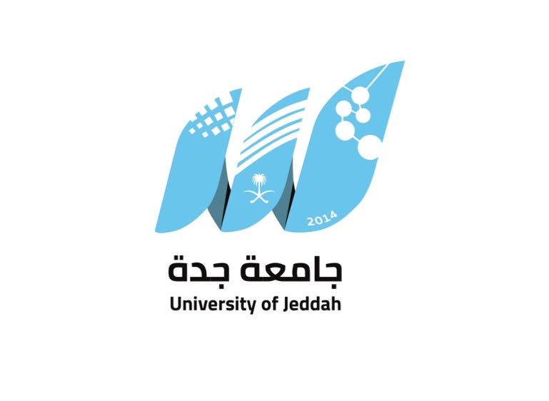

First of all ,I am a graduate of Univrsity of Jeddah, majoring in software engineering.
Enroll in accredited academic courses to gain information, experience, and skills in the field of software engineering and computer science in general,and of course to help me on entering the labour market.
| Educational level | Name of educational facility | Start - End |
|---|---|---|
| Primary School | SWCC School in Shuaiba area | 2006 - 2011 |
| Middle School | Al Nasr Schools in Jeddah | 2012 - 2014 |
| High School | Al Taawun schools in Jeddah | 2015 - 2017 |
| Bachelor's | University of Jeddah, Asfan branch, specializing in software engineering | 2019 - 2023 |
FIRST PROJECT : The name of the project is called My Tires,This project helps people whose tires are broken in the streets and saves time and effort for the customer.
SECOND PROJECT : The project is in the Software Quality and Metrics It is a report that is written after calculating 3 codes in different programming languages in two different programs to calculate the programming codes and explain the differences between the two programs.